33 Drawings, 1 Year
Prompts to fill our year with art together and a spot to share them.
As you turn blanks into images, send a photo or scan of an image, and a few words on its making, and we can track our 2d adventures here.
November 30, 2020


 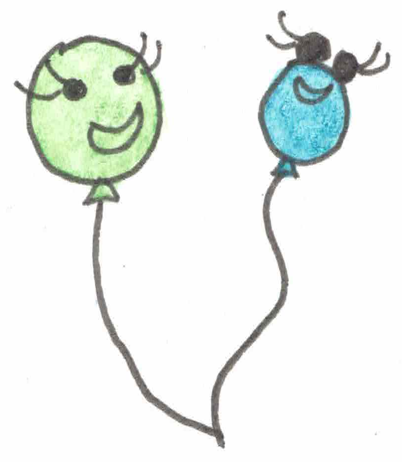
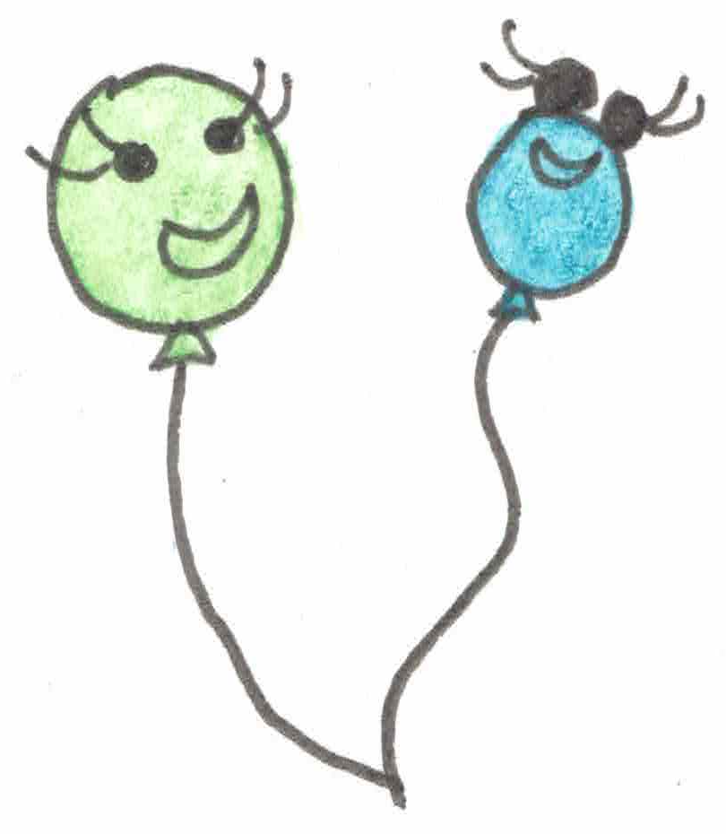

 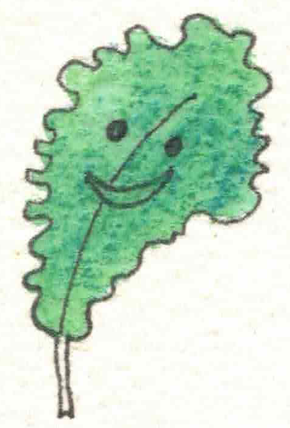
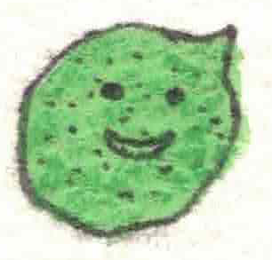
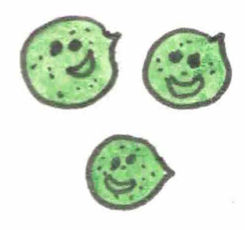
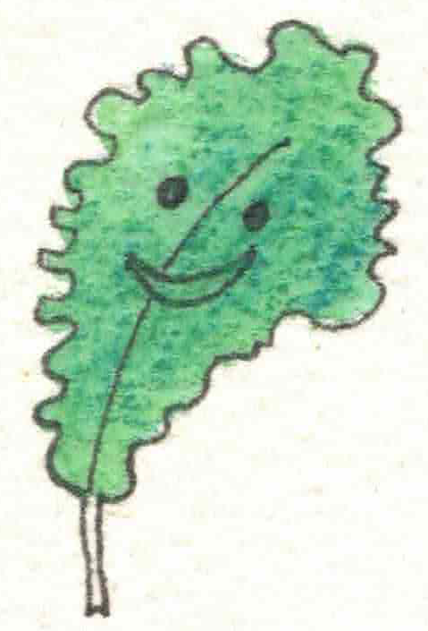
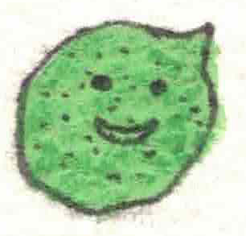
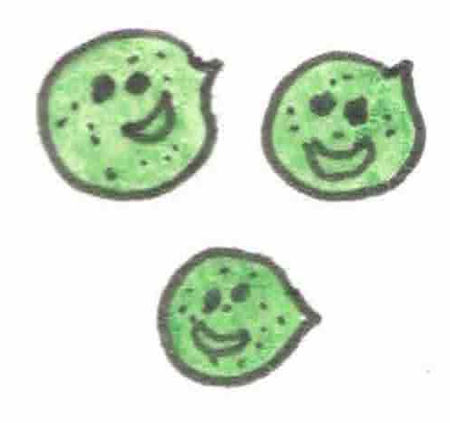
 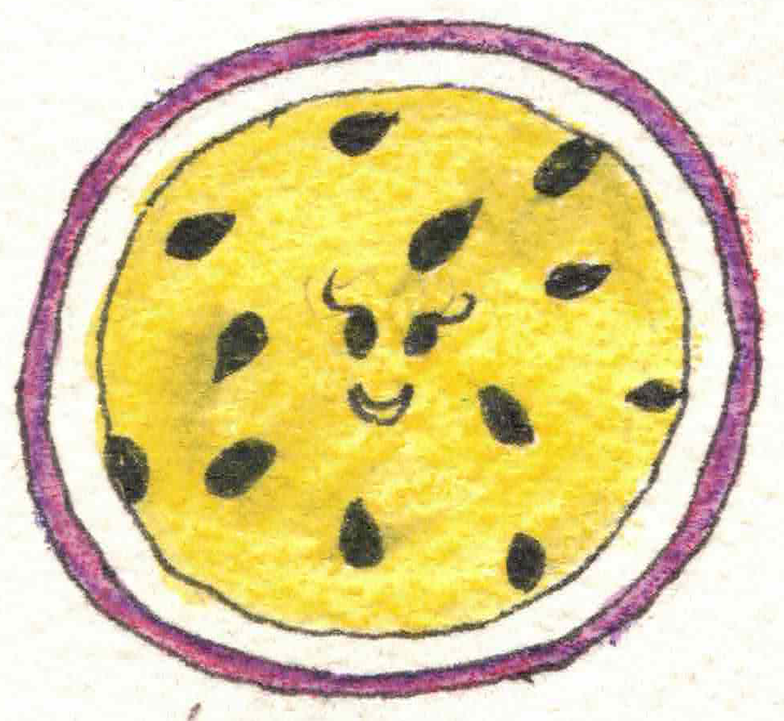
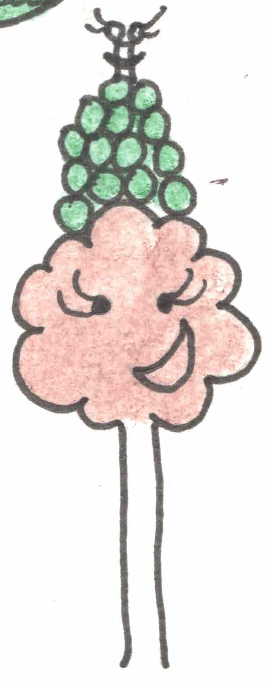
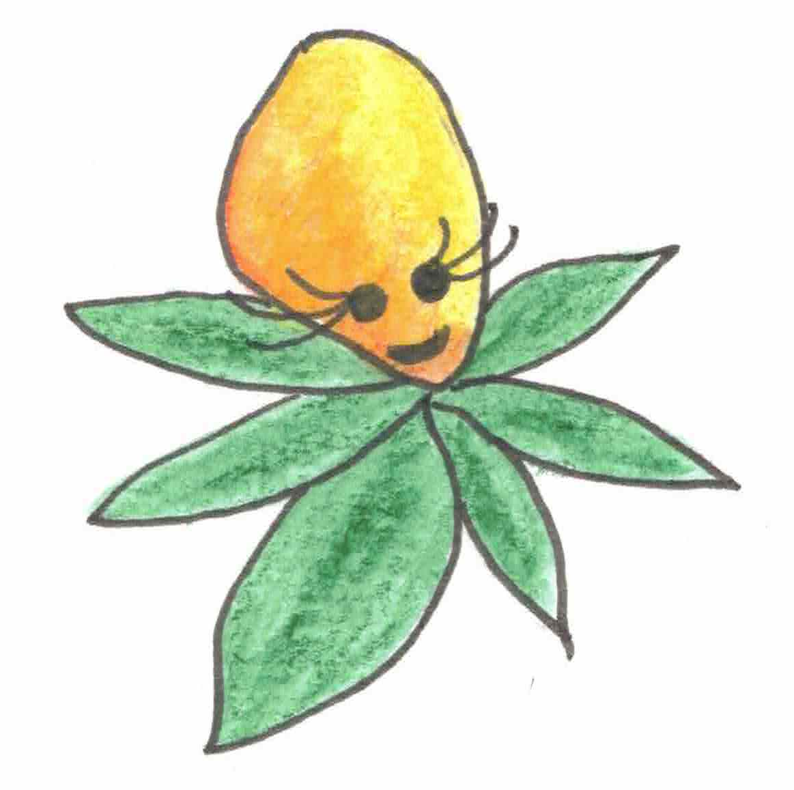
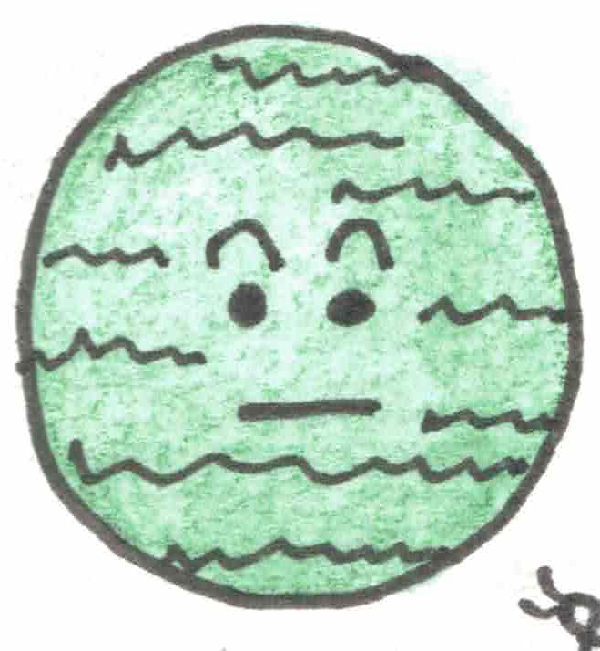
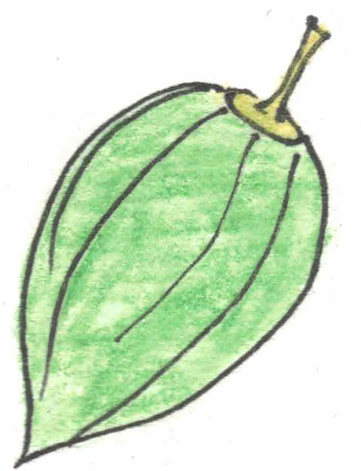
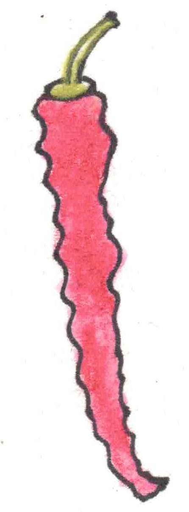
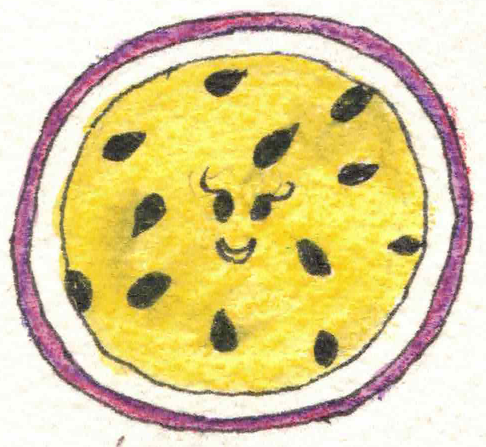
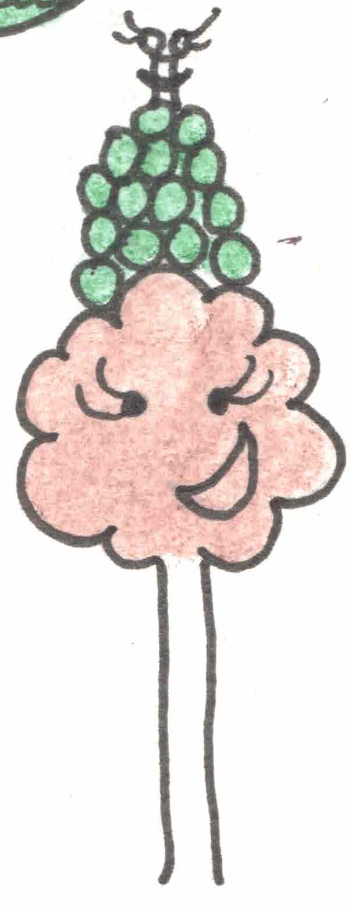
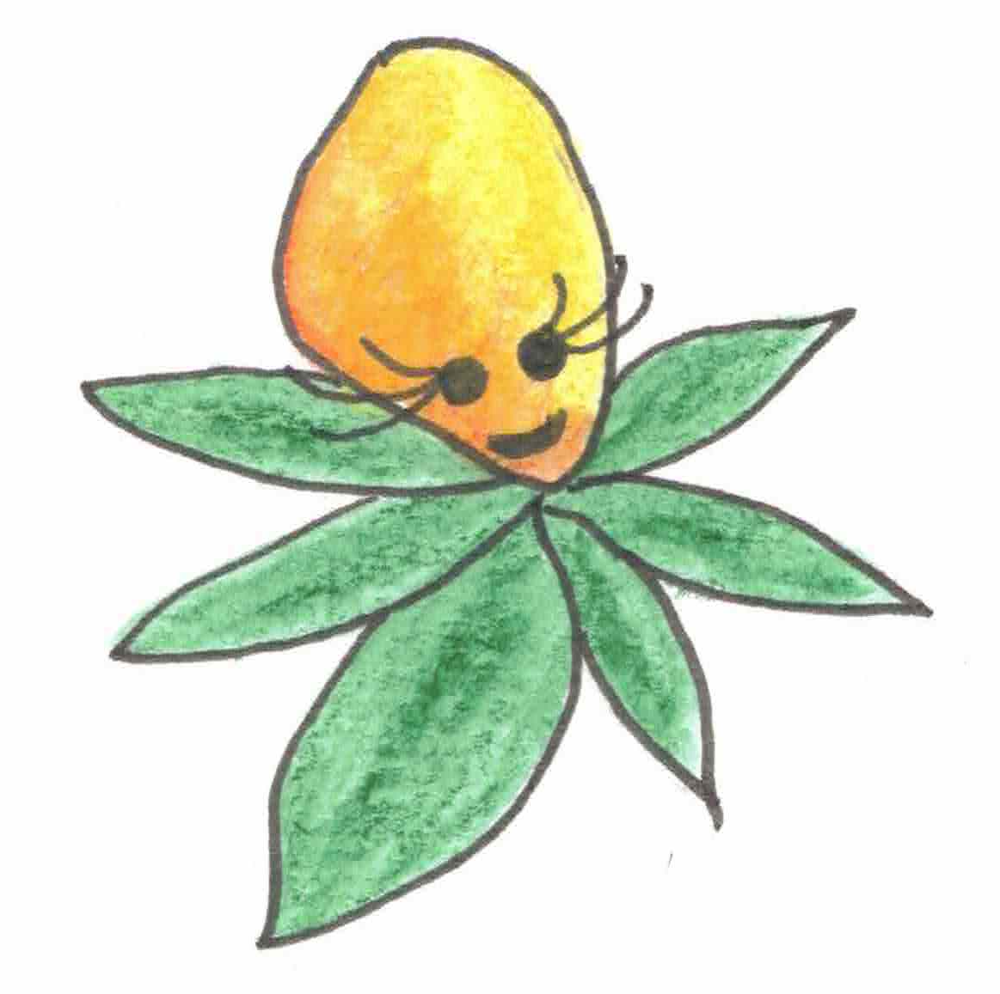
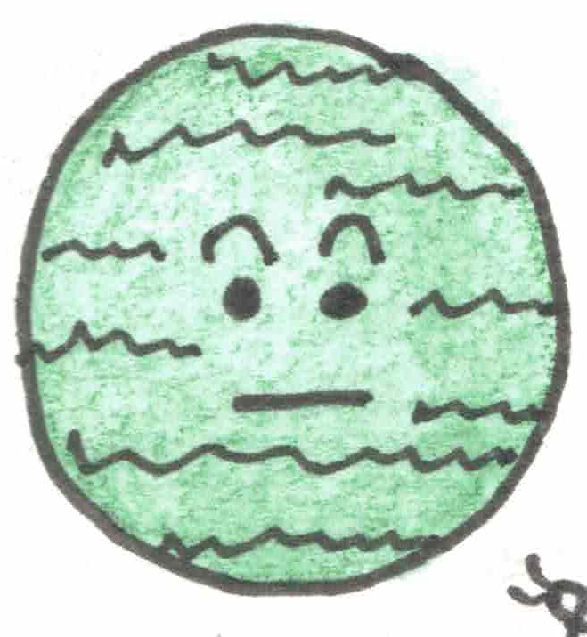
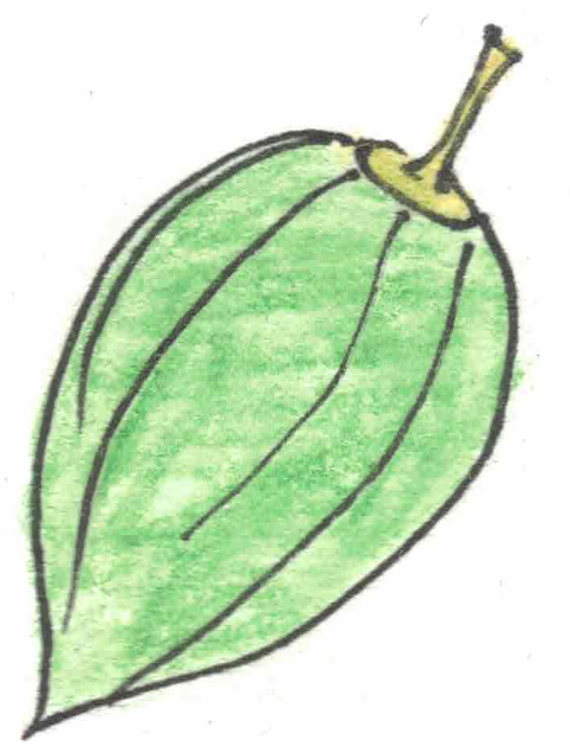
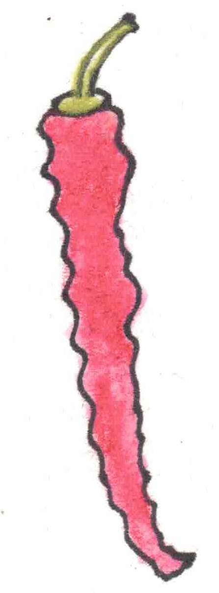